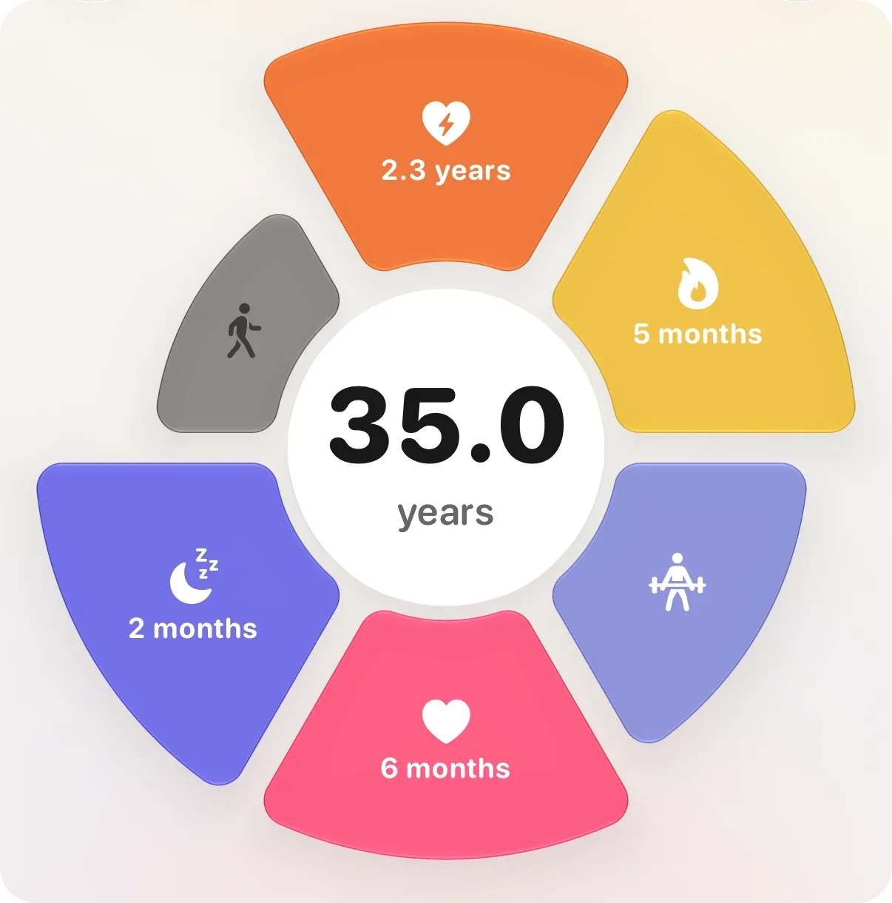
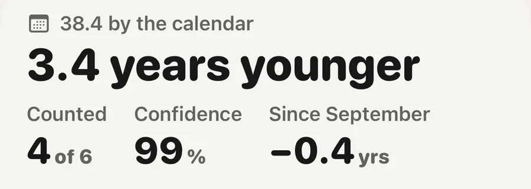

Concept · Longevity

A biological age from a watch is an estimate, not a measurement. It compares a few signals your watch already records, mainly cardio fitness, daily movement, resting heart rate and sleep, with people of your age and sex, and writes the result as years. No blood test or gene reading is behind it. Read it as a direction over weeks, not as a verdict on one day.
No. In research, biological age usually means one of two things: a clock built from chemical marks on DNA (Horvath, 2013), or a score worked out from blood values such as albumin, glucose and markers of inflammation (Levine and colleagues, 2018). Both need a blood or tissue sample. A watch has neither.
What a watch has is a set of signals that large studies have tied to how long and how well people live: how fit your heart and lungs are, how much you move, how fast your heart beats at rest, how you sleep. A watch age sets each of them against published values for people of your age and sex and turns the gap into years. If your signals look like those of a typical person five years younger, it says five years younger.
So it is a comparison written in years. It can be useful because it is made of things you can change. It is not a clinical aging test and should never be read as one. The idea itself is in the field note what is biological age?
Each maker picks its own. These are the ones with the firmest evidence behind them:
What Aera's body age reads, and how much each counts
These are links found in groups. They show how large numbers of people tend to fare, not what will happen to you.
Because each maker builds its number its own way. By their own descriptions, Garmin's Fitness Age on newer watches reads activity intensity, resting heart rate and BMI or body fat. WHOOP Age adds up nine inputs, from sleep consistency and steps to VO2 max and lean body mass. Oura's Cardiovascular Age reads the shape of your pulse wave as a sign of how stiff your arteries are. The inputs differ, the comparison groups differ, and so do the limits each maker sets.
Even a shared input is not the same number. Each watch estimates VO2 max its own way. In a validation study of 28 adults, Apple Watch read 6.1 ml/kg/min lower on average than a treadmill test with a mask (Lambe and colleagues, 2025). A gap of that size is worth years in any of these ages.
So two ages a few years apart can both be fair. Pick one and watch how it moves. Comparing across brands tells you about the brands.
Apple announced its own version in September 2026. Health Age sits in a new Longevity tab of the redesigned Health app and shows how your metrics are tracking relative to your calendar age. Apple names VO2 max, resting heart rate, sleep and HRV from Apple Watch as inputs, and you can add lab values such as A1c and LDL cholesterol.
It requires an Apple Watch, and the redesigned Health app runs on iPhones that support Apple Intelligence. Apple says it arrives as a free update later in 2026, starting in U.S. English, with more languages to follow. In November 2026 it was still in beta, so details may change.
Everything on this page applies to it too. It is a comparison written as years, built from the watch's own estimates, and it is best read as a trend.
A number that dropped a year after one run would be flattering you. The things it reads change over weeks. Fitness builds across a training block, resting heart rate drifts down with it, and a sleep habit only shows across many nights.
Single days are mostly noise. In 92,457 adults, one person's resting heart rate moved by about 3 beats a minute from one day to the next (Quer and colleagues, 2020), for reasons as ordinary as a late dinner, a warm bedroom or a glass of wine. An honest age has to look past that.
The day's number matters less than which way it leans over a month.
More on this in the field note why does biological age move slowly?
Resting heart rate and HRV follow the others. You do not train them directly. One hard session, one perfect night or a supplement will not move an honest age.

Body age beside your calendar ageThe sheet says how far your body age sits from your calendar age, how many parts count, and how sure Aera is. Fitness, heart, movement and sleep count. Strength and walking pace show on the flower but stay out of the age.
Aera, for iPhone and Apple Watch
Aera works out a body age on your iPhone from what Apple Health already holds: cardio fitness, active minutes, steps, resting heart rate, HRV, time asleep and sleep regularity. Each is set against published values for your age and sex, and the screen shows how many months or years each part adds or takes off, so you can see where the number comes from.
It reads your last weeks again every Monday. Once it has settled, one busy or quiet week moves it by two or three months at most. It never lands more than nine years from your calendar age, and with little data it leans toward your calendar age and says how sure it is. If you have a cuff that saves to Apple Health, or you measure your waist, you can add blood pressure and waist to height. Both are measured from the ideal, so they more often add years than take them off.
The Field Guide in the app explains every signal and names its sources. There is no account. Today's body age and its last 30 days are free, and older months are part of Premium. It works best with an Apple Watch, which records VO2 max and heart rate.
Body age is an estimate for everyday wellbeing, not a medical age. Aera is not a medical device.
No. A watch estimates it by comparing signals such as cardio fitness, movement, resting heart rate and sleep with people of your age and sex. Lab measures of biological age use blood or DNA. A watch age is useful as a direction over weeks, not as a clinical result.
Health Age is Apple's own estimate in the Longevity tab of the redesigned Health app, announced in September 2026. Apple says it uses Apple Watch data such as VO2 max, resting heart rate, sleep and HRV to show how your metrics track against your calendar age. It requires an Apple Watch and starts in U.S. English.
Each maker uses its own inputs, its own comparison group and its own limits, and each watch estimates VO2 max its own way. Two ages a few years apart can both be fair. Follow one number over time and do not compare across brands.
Build aerobic fitness over weeks, move every day, keep steady bed and wake times, and sleep enough. Most of the gain from steps comes by about 7,000 a day. One workout or one good night does not move an honest age.
Related field notes: what is biological age? · why does biological age move slowly? · what a consumer watch cannot measure
Related guides: Apple Watch VO2 max: how accurate is it? · What is a normal resting heart rate? · A blood pressure log your doctor can use
 Or scan with your iPhone
Or scan with your iPhoneFree to start. No account. Works with the watch you already wear.